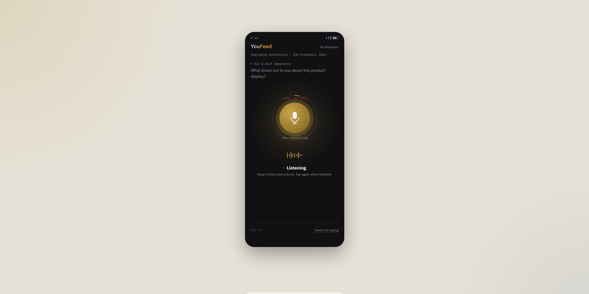
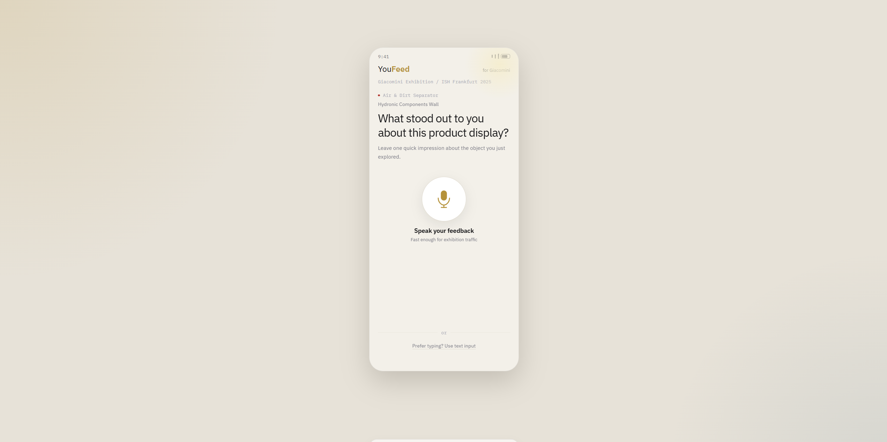
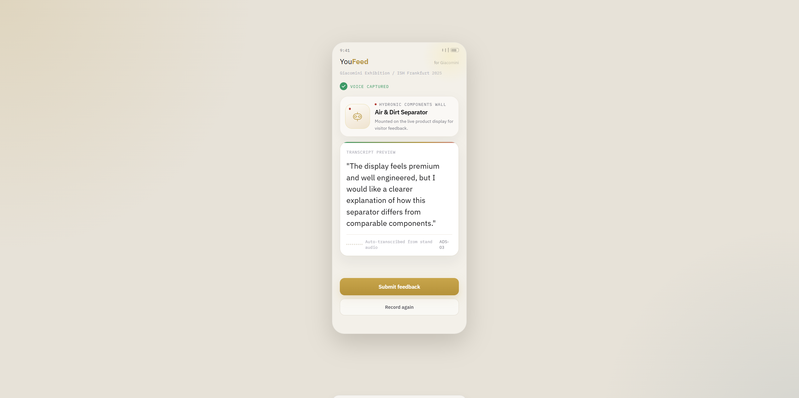
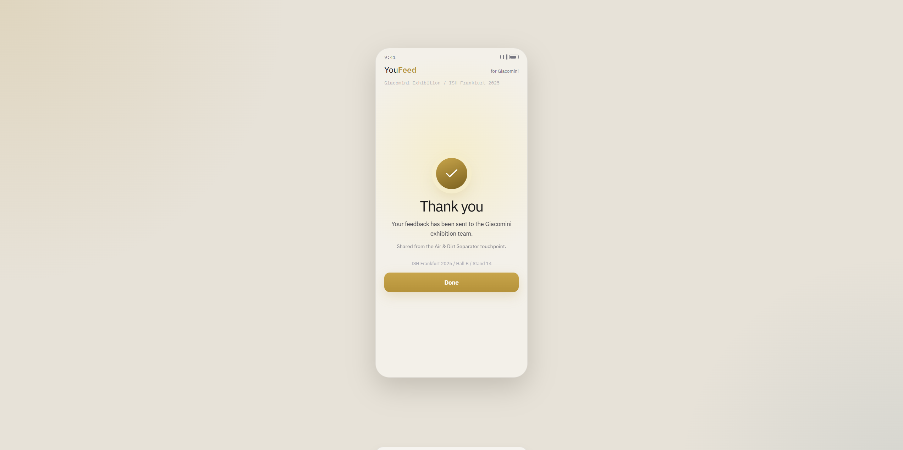

YouFeed
Redesigning an exhibition feedback touchpoint to be voice-first and low-friction — connecting physical presence back into an analysable digital feedback loop.
This project originated from a real exhibition scenario I observed during my internship at DI Works. The original concept comprised two components: YouFeed handling front-end feedback collection — allowing visitors to reach a mobile page bound to a specific exhibit via QR code or NFC — and InsightGPT handling back-end transcription, analysis, and structuring, converting scattered voice feedback into actionable insights.
As an intern, I focused on the front-end mobile experience of YouFeed. The goal was not to build a more complete form — it was to design a touchpoint genuinely suited to the exhibition environment: short dwell time, scarce attention, strong contextual dependency, yet still capable of capturing immediate, spontaneous reactions to the exhibit in front of you.
In the Giacomini exhibition pilot, different NFC tags were deployed near different exhibits or display areas. Once triggered, the page had to immediately communicate to the user "what you are rating right now" — without creating the psychological burden of "I need to complete a task."
Recommended: Giacomini booth or exhibit environment

Recommended: tag, stand card, or touchpoint diagram
Exhibition environments are high-flow. Users typically give an interface only a few seconds to understand before moving on.
Whichever tag a user scans, they should immediately understand what they are evaluating — avoiding the feeling of a generic questionnaire.
The experience should encourage natural expression, while acknowledging that users in public spaces are not always willing to speak at length.
Content will change per exhibit, but the structural and interaction logic must remain unified, reusable, and easy to deploy.
YouFeed
The front-end touchpoint layer. Users enter a context-specific page bound to the exhibit via QR code or NFC, and quickly leave voice or text feedback.
InsightGPT
The back-end insight layer. The system transcribes and analyses content, helping teams extract actionable insights from high-frequency, fragmented feedback.
This case study is not about designing a single page — it is about connecting the physical touchpoint, front-end interaction, and back-end insight pipeline into one coherent chain. For a portfolio, this matters more than showing isolated UI, because it articulates the conditions under which the design works and how it would be deployed.
Principle 01 · Context-specific
Each touchpoint corresponds to one clear object, so users need almost no additional explanation or recall.
Principle 02 · Voice-first
Prioritise "say one sentence" over turning feedback into a long form to fill out.
Principle 03 · Low-friction
No login, no complex hierarchy, no redundant steps — shorten the path from trigger to expression as much as possible.
Principle 04 · Modular
Keep the page structure consistent while allowing content to be dynamically swapped per exhibit, zone, or event.
The final interface is organised around a few key states — "ready to speak, actively recording, captured, submitted" — rather than stacking features. This keeps attention focused on the action the user actually needs, allowing the page to be understood, used, and closed within seconds.
Recommended: the recording state page, as the visual centrepiece of the flow




From exhibit to touchpoint, front-end collection, and back-end insight — this project is more like a system entry point than an isolated UI.
Touchpoint format, placement, exhibition noise, and dwell rhythm all affect whether users are willing to leave feedback in the first place.
The real challenge is not how many features are included — it is how to make expression feel almost effortless in a high-distraction, low-dwell environment.
Image placeholders are retained throughout so you can progressively replace them with real exhibition photos, touchpoint photos, and high-fidelity UI screens without disrupting the overall layout consistency.